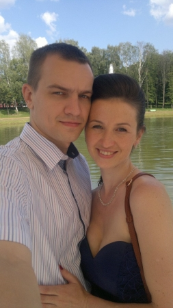
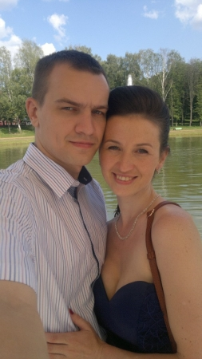

ФИО: Дмитрий Вячеславович Оксентюк
Дата рождения: 19.09.1988
Родился и вырос в г.п. Уречье, Любанского района, Минской области, Республика Беларусь
Сейчас проживаю в г. Минске
Образование высшее
Окончил БНТУ (Белорусский национальный технический университет) в 2011-м по специальности инженер-конструктор
Семейное положение: женат, воспитываю сына и дочь